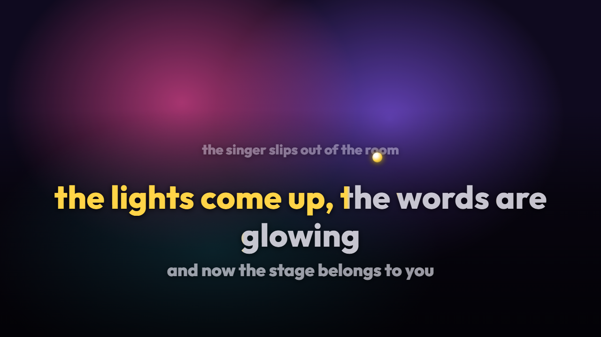
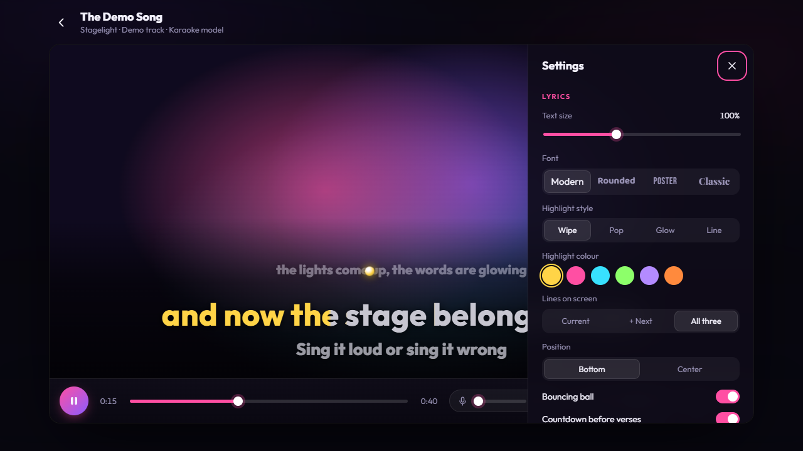

Any song you can find
If it's on YouTube, it can be karaoke. No catalogue to wait for, no missing songs.
Free · Open source · Runs on your computer
Stagelight turns any song into karaoke. Search for it, and a few minutes later the vocals are gone, the music video is playing and the lyrics light up word by word. Your living room just became the stage.
Windows · macOS · Linux
Why we built this
Scrolling through stories isn't the same as being in the same room. Somewhere between group chats and chatbots, we stopped doing the simple, slightly embarrassing things that actually bring people together.
Karaoke is one of the best of them. Nobody is good at it, everyone laughs, and by the third song even the quiet friend wants the microphone. It's hard to stare at your phone while your best friend is murdering a power ballad.
So yes, Stagelight uses AI. To get you off the screen and back to your people.
How it works
Search right inside the app, or paste a YouTube link. Queue a whole evening's worth while friends arrive.
An AI model removes the lead vocal, the lyrics are found and synced to that exact music video. All on your computer.
Fullscreen on the TV, music video behind you, every word lighting up right when you should sing it.
Features
If it's on YouTube, it can be karaoke. No catalogue to wait for, no missing songs.
The original video plays behind the lyrics, perfectly in sync with the instrumental.
Four highlight styles, a bouncing ball and countdowns before every verse. You always know when to come in.
Don't know the song that well? Mix a quiet version of the original singer back in.
Line up songs and let them prepare in the background while the first one plays.
No account, no upload, no subscription, no ads. Everything stays on your computer.


Download
Version 0.1 · About 150 MB, plus a one-time download of the AI engine on first launch.
Apple Silicon (M1 or newer)
Download .dmgIntel Macs aren't supported: the AI library has no builds for them anymore.
Stagelight is a free project without a paid code-signing certificate, so your system asks before opening it the first time.
chmod +x Stagelight-*.AppImage.Prefer to check the code first? It's all on GitHub, and you can run it from source with one command.
Good to know: vocal removal runs on your own computer. A song takes a few minutes on a laptop and much less with an NVIDIA graphics card. Queue songs early and they'll be ready when you are.
Stagelight is free and always will be. If it made your night, you can buy me a coffee, or just give the project a star. Both help a lot.
FAQ
Yes. Stagelight is open source under the MIT licence. No account, no subscription, no ads.
No. The vocal removal and everything else runs on your own computer. Stagelight only talks to YouTube (to fetch the song) and to LRCLIB, a free lyrics database.
That's the AI separating the voice from the music, right on your computer. It's done once per song; after that it opens instantly. With an NVIDIA graphics card it's much faster.
If the lyrics database doesn't have it, Stagelight listens to the separated vocal and writes the lyrics down itself. It's not perfect on singing, but it's usually close.
No. Sing with or without one, as loud as your neighbours allow. Scoring with a microphone is on the roadmap.
Stagelight is a tool for private, personal use at home. Songs, videos and lyrics belong to their owners, and downloading from YouTube may be against its terms where you live, so please use it responsibly and don't redistribute what it makes.